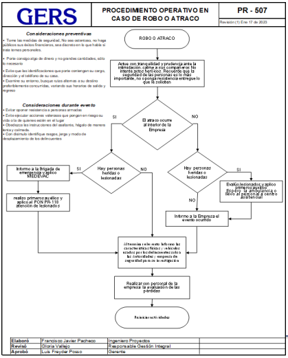
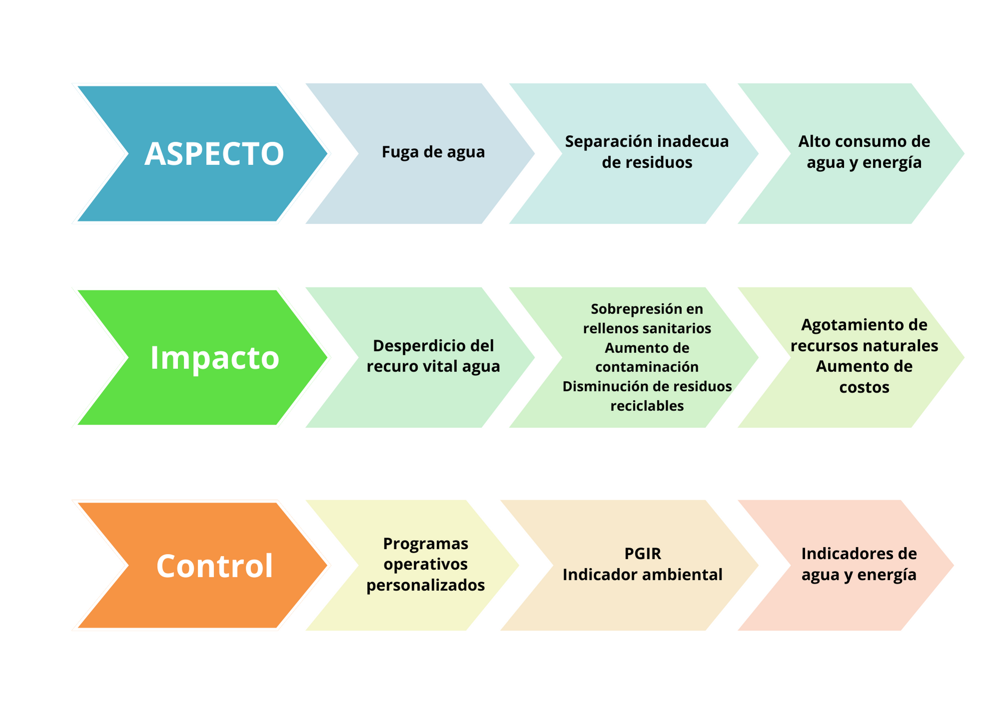
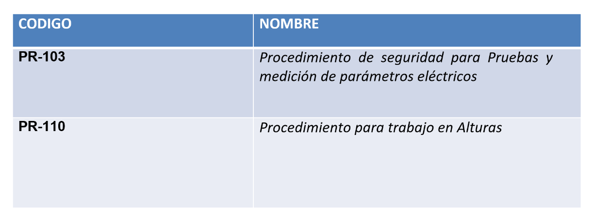

aspectos e impactos ambientales, procedimientos seguros para el desarrollo de la tarea, derechos y deberes del sistema de riesgos laborales, entre otros. La reinducción se hace de manera periódica, una vez al año o cuando ocurra una modificación en la vinculación como: cambio de sitio de trabajo, cambio de cargo, cambio en los procesos o cuando no se evidencia conocimiento de los aspectos básicos del SG-SSTA
Estructura temática
En este curso encontrarás estos 3 secciones claves de acercamiento
a nuestra organización,
continúa adelante para irlos revisando en el mismo orden


Conoce la organización.
Sección 1
Nuestro propósito
superior
Ofrecer servicios eficientes y confiables que se ajusten a tus proyectos siendo así una organización proveedora de bienestar, donde velamos los derechos de todos nuestros colaboradores, coherente con los principios que nos rigen y comprometidos con nuestro papel dentro de la sociedad.

Generalidades de la empresa.
GERS fue fundada en 1981 en Cali, Colombia, por el ingeniero electricista Juan Manuel Gers.
- Su orientación inicial fue hacia la consultoría en ingeniería con énfasis en diseño y estudios de sistemas eléctricos.
- Desde 1989 se incorporaron la gerencia de proyectos, las pruebas en campo y la puesta en servicio de proyectos eléctricos.
- A partir de 1994 GERS incluyó en su ejercicio otras disciplinas como las ingenierías Electrónica, Civil, Ambiental y Mecánica con el fin de prestar un servicio integral y expandió su cobertura a Fábricas Petroquímicas, Cementeras, Papeleras y Siderúrgicas.
- En 1999 abrió sede en Weston-Florida, desde donde se han atendido proyectos en Irak, Senegal, Chile, Argentina entre otros.
- En 2023 se abre la oficina en Barranquilla desde donde se atenderá las empresas de la costa colombiana.

Historia GERS
1981-2023
Hemos atendido proyectos en más de 46 países
Hemos atendido más de 400 clientes.
Han pasado más de 950 profesionales.
Actualmente somos 140 trabajadores directos.
GERS ha realizado 222 proyectos en 13 plantas cementeras en Colombia, Perú, Centroamérica y el Caribe, 699 proyectos desarrollados de diseños de subestaciones y líneas de niveles de 230kV, 115 kV y 34,5kV, 1159 estudios eléctricos de sistemas de potencia para los sectores industriales, hidrocarburos, minero y sistema eléctrico STR-STN, 4380 proyectos en estudios eléctricos y pruebas a relés de protección en los sectores industriales e hidrocarburos.
Linea del tiempo.
Sistema de gestión
GERS cuenta con un sistema de Gestión en Calidad, Seguridad, Salud en el Trabajo y Gestión Ambiental bajo los estandares de las normas:


Las normas ISO auditadas y certificado por el Ente Certificador ICONTEC y el Sistema de Seguridad y Salud en el Trabajo y Ambiente para Contratistas RUC Auditado y calificado por el Consejo Colombiano de Seguridad.
Organigrama corporativa.
Conoce a nuestras directivas, desplazando el mouse sobre la imagen que quieras ampliarPROCESO DEL SISTEMA
DE
GESTIÓN.
Nuestra Misión
GERS ofrece servicios y productos de calidad que permiten dar soluciones integrales acordes a las necesidades y requerimientos de sus clientes.
Nuestra Visión
GERS será siempre una empresa reconocida por sus estándares de calidad, alta eficiencia, atención, la integralidad de soluciones que propone, el desarrollo del talento humano, ambiente laboral, compromiso social, académico, cultural, y ambiental y sus resultados financieros.
Valores corporativos.
Propuesta de valor.
Estamos preparados para comprender las necesidades de nuestros clientes, desarrollar y entregar soluciones a su medida, confiables, sostenibles y efectivas.
Pilares estrategicos
Estrategia corporativa.
- Consolidar unidades de negocios aprovechando la afinidad y complementariedad de las áreas operativas actuales.
- Ofrecer nuevos servicios y productos.
- Aumentar nuestra participación en el mercado nacional y en el mercado internacional, apalancados en la presencia de nuestras empresas en otros países y a través de alianzas y/o adquisiciones.
Marco legal y normativo.
Los productos y servicios que presta GERS cumplen normatividad legal nacional e internacional de calidad, seguridad salud en el trabajo y ambiental
Los principales requisitos legales aplicables se encuentran en los códigos y reglamentos de carácter legal y obligatorio expedidos por el estado Colombiano, tales como:
- Código eléctrico nacional NTC 2050.
- Reglamento técnico de instalaciones eléctricas RETIE.
- Reglamento técnico de iluminación y alumbrado público RETILAP.
- Reglamento colombiano de construcción sismo resistente NSR 10.
- Resolución 0312 de 2019 estándares mínimos del SGSST.
GERS realiza actualización de los requisitos de tipo legal y regulatorio con el fin de garantizar su cumplimiento, para esto cuenta con una matriz legal integral.

Marco legal y normativo.
Algunos criterios exigidos por clientes son:
Resolución 5018 de 2019:
- Que conforme a lo previsto en el Decreto Único Reglamentario 1072 de 2015 del Sector Trabajo, en los artículos 2.2.4.6.1, 2.2.4.6.8, el artículo 348 del Código Sustantivo del Trabajo, y el artículo 84 de la Ley 9a de 1979, los empleadores son responsables de la Seguridad y Salud en el Trabajo de sus trabajadores y de proveerles condiciones seguras de trabajo.
- Artículo 72. Trabajos con tensión. Requisitos para el personal. Para realizar una actividad o trabajo En media tensión se requiere:
d) Se le debe practicar exámenes médicos de ingreso y periódico anual para constatar su estado de salud, condición física y mental y su aptitud para este tipo de trabajo. No son aptos para el oficio personas con marcapasos, prótesis u órtesis metálicas.
- Parágrafo.El personal que realice trabajos con tensión debe encontrarse en condiciones óptimas tanto físicas como psicológicas.
- Artículo 54: Se dispondrá siempre de un plan de emergencia y de personas responsables para la atención de primeros auxilios, teniendo en cuenta esto, curso de formación en RCP y PA de 40 horas avalado por bomberos - 22 de marzo, 12 y 26 de abril, 10 y 24 mayo, 15 de junio.
Certificación de cumplimientos
de requisitos.
Resolución 0312
El CCS evaluó en el año 2023 en Auditoria de la Guía RUC el cumplimiento de requisitos de la resolución 0312 y consideró que GERS tiene un grado de implementación del 91%% el cual es mas bajo que el evidenciado. Las desviaciones mas relevantes implican:
- Normatividad nacional vigente: Restricciones de salud, exámenes médicos completos.
- Normatividad nacional vigente: Mantenimiento y control metrológico.
Certificación de cumplimientos
de requisitos.
Resolución 0312
De acuerdo a evaluación por parte de la ARL de Resolución 0312 de Diciembre del 2023 se obtiene el 100% de cumplimiento.
Certificación de cumplimientos
de requisitos.
Resolución 0312
Políticas
Sección 2
Políticas de gestión integral.
GERS, empresa de consultoría en ingeniería que presta servicios de diseño, estudios, pruebas y puesta en servicio de sistemas eléctricos, comercialización de equipos y software especializados, se compromete a realizar sus actividades cumpliendo la legislación nacional, la internacional y los requisitos suscritos aplicables a sus proyectos. Sus acciones se orientan a la protección ambiental, la seguridad y salud de sus colaboradores y contratistas y se enfocan en la mejora continua de sus procesos y la satisfacción de sus clientes.
Hace parte de la política de GERS:
- Prevenir accidentes y enfermedades identificando los peligros, evaluando y valorando los riesgos, determinando los controles y mejorando continuamente las condiciones de trabajo.
- Prevenir la contaminación del medio ambiente, controlando sus impactos, haciendo uso eficiente de sus recursos y asegurando la disposición adecuada de los residuos generados.
- Desarrollar programas de responsabilidad social dirigidos a población vulnerable.
- Evitar daños a su propiedad y la de sus clientes.
- Prestar sus servicios con oportunidad, confiabilidad y rentabilidad adecuada.
Para lograr estos compromisos, la empresa provee los recursos humanos, económicos y técnicos necesarios para el mejoramiento de sus servicios y el desarrollo integral de sus colaboradores.
Política de seguridad vial.
GERS está comprometida con la prevención de accidentes asociados con el transporte de su personal. Para cumplir con este propósito define:
- Cumplir con la reglamentación del Código Nacional de Tránsito terrestre.
- Desarrollar estrategias de concientización a través de capacitaciones orientadas a la prevención de accidentes de tránsito.
- Realizar mantenimientos preventivo y correctivo de los vehículos de la compañía, para garantizar la seguridad de su desempeño.
Los empleados con vehículo propio, de la empresa o de terceros, son responsables de participar en las diversas actividades que se programen y desarrollen, con el fin de disminuir la probabilidad de ocurrencia de accidentes que puedan afectar su integridad física, mental y social o impactar negativamente a la comunidad y al ambiente.
Reglamento de higiene y
seguridad industrial.
- ARTICULO 1.La empresa se compromete a dar cumplimiento a las disposiciones legales vigentes, tendientes a garantizar los mecanismos que aseguren una adecuada y oportuna prevención de los accidentes de trabajo y enfermedades profesionales de conformidad Código Sustantivo del trabajo.
- La Ley 9 de 1979, Resolución 2400 de 1979, Decreto 614 de 1984, Resolución 2013 de 1986, Resolución 6398 de 1991, Ley 776/02, Ley 1562 de 2012, Decreto 1072 de 2015, Resolución 1111 de 2017, y demás normas que con tal fin se establezcan.
- ARTICULO 2.La empresa, se obliga a promover y garantizar la constitución y funcionamiento del Comité Paritario de Seguridad y Salud en el Trabajo COPASST, de conformidad con el programa de salud ocupacional, Resolución 2013 de 1986, Decreto 1295/94, Decreto 1072 de 2015, Resolución 1111 de 2017.
- ARTICULO 3.La empresa se compromete a hacer una adecuada asignación de los recursos necesarios para poder diseñar, implantar, revisar, evaluar y mejorar las medidas para la prevención y el control para que de esa manera se pueda tener asegurada una eficaz gestión de los riesgos a los que se encuentra expuesto el lugar de trabajo y para que los diferentes responsables puedan cumplir con las responsabilidades que se han designado, desarrollando actividades permanentes, de conformidad con el Sistema de Gestión de Seguridad y salud en el trabajo, que contemplan como mínimo los siguientes aspectos:
- a) Programas de Gestión de la Salud: Orientados a promover y mantener el más amplio grado de bienestar físico, mental y social de los trabajadores en todos los oficios, prevenir cualquier daño a su salud, ocasionado por las condiciones de trabajo.
- b) Programas de Gestión de Peligros y Riesgos: Dirigidos a establecer las mejores condiciones de saneamiento básico industrial y crear los procedimientos que conlleven a eliminar o controlar los factores de riesgo que se originen en los lugares de trabajo y que puedan ser causa de enfermedad laboral, disconfort o accidentes.
Reglamento de higiene y
seguridad industrial.
- PARAGRAFO: A efecto de que los riesgos contemplados en el presente artículo no se traduzcan en accidentes de trabajo o enfermedades laborales, GERS ejerce su control en la fuente, en el medio transmisor o en el trabajador, de conformidad con lo estipulado en el Sistema de Gestión de Seguridad y Salud en el Trabajo de la empresa.
- ARTÍCULO 5:La empresa y sus trabajadores darán estricto cumplimiento a las disposiciones legales, así como a las normas técnicas e internas que se adopten para lograr la implementación de los Programas enfocados a la Gestión de la Salud, Peligros y Riesgos y Amenazas que sean concordantes con el presente Reglamento, Políticas y el Sistema de Gestión de Seguridad y Salud en el Trabajo de la empresa.
- ARTÍCULO 6: La empresa ha implementado un proceso de inducción del trabajador en las actividades que deba desempeñar, capacitándolo respecto a las medidas de prevención y seguridad que exija el medio ambiente laboral y el trabajo especifico que vaya a realizar.
- ARTÍCULO 7: La empresa se compromete a no contratar trabajadores menores de diez y ocho años de edad, el caso de contratar menores de esta edad la empresa se sujetará en lo establecido en su Reglamento interno de trabajo.
- ARTÍCULO 8: Los trabajadores de la empresa GERS aceptan someterse a exámenes de detección de consumo de alcohol o drogas psicoactivas, según lo disponga el propietario del proyecto o la empresa, para lo cual debe firmar un consentimiento informado, de acuerdo al Reglamento Interno de trabajo.
- ARTÍCULO 9: Este reglamento permanecerá exhibido en un lugar visible de la empresa y en forma digital en la wiki, y se dará a conocer a los trabajadores al momento de realizar la inducción.
COPASST.
El COPASST debe estar conformado por igual número de representantes por parte de la administración e igual número de representantes por parte de los trabajadores.
Funciones del comité de convivencia.
Plan de emergencia.
- Evacuación.
- Control de incendios
- Primeros auxilios.
MEDEVAC
Plan de emergencia.
Plan de emergencia
Integrantes brigada de emrgencia CALI
Primeros auxilios:
Armando Rodriguez.
Control de incendios:
Armando Rodriguez.
Evacuación:
Flor Angela Zapata.
Factores de riesgos y sus controles.
Aspecto e impactos ambientales.
Procedimientos seguros para
el desarrollo de la tarea.


Deberes y derechos del empleado.
Deberes:
- Cumplir las políticas definidas por la empresa.
- Usar adecuadamente los EPP.
- Seguir los procedimientos de trabajo seguro.
- Reportar los accidentes e incidentes.
- Asistir a las capacitaciones.
Derechos:
- Prestaciones sociales: prima, vacaciones, cesantías, intereses de las cesantías.
- Contrato laboral.
- Afiliación a seguridad social.
Actos inseguros.
Todas las acciones y decisiones humanas, que pueden causar una situación insegura o incidente, con consecuencias para el trabajador, la producción, el medio ambiente y otras personas.
Los actos inseguros ocasionan el 96% de los accidentes.
- Realizar labores sin autorización.
- Realizar la labor en condiciones inseguras o subestándar.
- Omitir las condiciones de peligro o simplemente no dar aviso de las condiciones.
- Utilizar los elementos, equipos, máquinas de trabajo sin los dispositivos de seguridad o en mal estado.
Condición insegura.
Todo elemento de los equipos, la materia prima, las herramientas, las máquinas, las instalaciones o el medio ambiente que se convierte en un peligro para las personas, los bienes, la operación y el medio ambiente y que bajo determinadas condiciones puede generar un incidente y/o accidente.
Operar equipos sin autorización.
No señalizar o advertir de algún peligro.
No asegurar adecuadamente los equipos.
Operar equipos a velocidades inadecuadas.
Quitar dispositivos de seguridad.
Utilizar equipos y/o materiales defectuosos.
No utilizar equipos de protección personal EPP.
Gestión ambiental
- Gestión de residuos sólidos y líquidos Gestión de consumo de agua, energía
- Recuperación y mantenimiento del separador de la Cra 66 entre calle 3 y 3B declarándolo zona limpia - convenio con el DAGMA.
Clasificación de residuos.
CANECA ROJA 1: Desechos que impliquen residuos peligrosos como envases de productos químicos, latas contaminadas con lubricantes, limpiador de contactos.
CANECA ROJA 2: Residuos eléctricos y electrónicos (RAEES, RESPEL). Algunos ejemplos son pantallas y monitores, lámparas, grandes y pequeños aparatos, y aparatos de informática y telecomunicaciones.

Direccionamiento estrategico.
Sección 3
Direccionamiento estratégico 2024
- Incrementar participación en el mercado nacional e internacional y proyectar la empresa para atender nuevos requerimientos del mercado. En el mercado nacional debemos tener un plan quinquenal que permita interactuar con al menos el 50% de las empresas que más facturan en Colombia
- Consolidar una cultura organizacional y modernizar la estructura organizacional
- Proveer los recursos necesarios a las áreas para atender los proyectos adjudicados


- Consolidar el equipo de mercadeo y ventas para tener más fuerza de ventas a nivel nacional e internacional y disponer del CRM.
- Mejorar la productividad, la eficacia operativa y administrativa.
- Desarrollar más el GERSPRO para tener un mejor control de la gestión de los proyectos.
- Cumplir las metas financieras para sostener la buena marcha de la empresa.
- Planear la estructura financiera de la empresa para el normal funcionamiento, la ejecución de los proyectos, apalancar el crecimiento y mantener unas finanzas sanas.
- Consolidar un equipo de desarrollo e innovación para proveer soluciones integrales a los clientes.
- Incrementar y actualizar las competencias de los profesionales mediante el plan de capacitación interna.
- Aprovechar la reforma de la sede de Cali y nuestras oficinas de B/quilla y Bogotá para tener más presencia y relacionamiento.
- Dotar de una estructura de coordinación y operación a GERS Academy.
- Mantener apoyo a proyectos sociales, académicos y culturales de la región y el país.

RIESGOS
Y
OPORTUNIDADES.
CONTROL
DE
PROCESOS.
Procedimientos seguros para
el desarrollo de la tareas.
FUNCIONES, RESPONSABILIDADES
Y BENEFICIOS.

Perfiles de cargos y funciones.
Al momento de vinculación con GERS, el empleado puede consultar el perfil del cargo en la wiki de GERS en el siguiente enlace: http://wiki.gers.co/doku.php
En la pestaña índice se debe buscar el cargo asignado para que lo lleve a la pestaña correspondiente. Por cada cargo se puede consultar la siguiente información:
- Identificación.
- Propósito general – objetivo del cargo.
- Responsabilidades del cargo.
- Autoridad.
- Entorno del cargo.
- Aptitudes y exigencias del puesto de trabajo.
- Experiencia.
- Funciones principales.
- Profesiograma (Riesgos asociados, exámenes médicos).
La pestaña COMUNES A TODOS, se refiere a las responsabilidades comunes a todos los trabajadores en temas de seguridad y salud en el trabajo. Se recomienda revisarlas e interiorizarlas.
INDUCCIÓN TECNOLOGIA
DE LA INFORMACIÓN.
Objetivo.
Administrar el buen uso de las tecnologías de la información de manera edificante garantizando su funcionalidad para el optimo desempeño en base a las necesidades de los usuarios y de las operaciones de la empresa.

¿Como se usa google drive?.
Cada usuario tiene asignado un espacio en google drive donde podra hacer uso de dos carpetas principales las cuales son:

Mi unidad

Unidades Compartidas
Mi unidad.
Esta es la carpeta en la cual el usuario debera de guardar toda la información que valla a sincronizar ya que todo lo que este en esta carpeta se sincronizara automaticamente con la respectiva cuenta de usuario.

Unidades compartidas.
Es un espacio compartido con otros usuarios e información de la compañía a la cual tendrá acceso de manera limitada. Estás unidades cuentan con diferentes permisos los cuales serán ajustados por el área de TI según la necesidad y unidad correspondiente.
Los roles que se manejan son los siguientes:
- Administrador
- Administrador de contenido
- Colaborador
- Comentarista
- Lector

Estructura de la
información.
Una vez sea configurado la aplicación de google drive en el equipo asignado del usuario debera de seguir con la sguiente estructura de la información asociada a los proyectos que este desarollando.
Toda la información debe estar ubicada dentro de la carpeta Mi Unidad.
- Ejemplo 1: Equipo\Z:\Mi unidad\Código del proyecto, consecutivo del proyecto y nombre del proyecto.
- Ejemplo 2: Equipo\Z:\Mi unidad\S16-39 PRUEBAS A INTERRUPTORES DE BAJA TENSIÓN
En cada una de las areas hay una person asignada para actualizar la información de los proyectos finalizados en las unidades compartidas.
- Área de Diseños: Yenny Tafurt
- Área de Estudios: Jesus Ortega
- Área de PAC: Angelly Mondragon
- Área de Bogotá: Armando Rodríguez
La información de los proyectos finalizados pude ser consultada por los usuarios con el rol de "lectura" e información histórica.
La estructura que se debe tener al momento de subir la información es:
- Estructura: Código del proyecto, consecutivo del proyecto y año del proyecto .
- Ejemplo: J1- 13 - 2014
Soporte.
En caso de tener dudas o fallas en su equipo por favor comunicarse con los encargados de TI los cuales atenderán sus inquietudes en el menor tiempo posible.
Correo: douglas.lopez@gers.com
Correo: karen.gomez@gers.com
En caso de usar Gmail, también podrá comunicarse por medio de la aplicación de Chat.

SERVICIOS QUE OFRECE
GERS.
Estudios de sistemas eléctricos.
- Arco eléctrico (Arc Flash).
- Arranque de motores.
- Cálculo de ajustes y coordinación de protecciones eléctricas.
- Estudio de conexión de centrales generadoras y proyectos eléctricos.
- Deslastre de carga.
- Estabilidad transitoria, tensión y pequeña señal.
- Estudio de proyección de demanda y análisis de operación para industrias.
- Evaluación económica de proyectos eléctricos.
- Flujos de carga.
- Cortocircuito.
- Pérdidas en sistemas eléctricos.
- Planeación de sistemas eléctricos.
- Saturación de transformadores de corriente.
- Modelamiento de sistemas eléctricos en software de simulación.
Diseño e ingeniería.
- Análisis de riesgo eléctrico.
- Apantallamiento.
- Civil y estructural asociado a sistemas eléctricos.
- Conceptuales, básicos y de detalle.
- Coordinación de aislamiento.
- Estudios de impacto ambiental.
- Generación de energía eléctrica y cogeneración.
- Interventoría de proyectos.
- Líneas de distribución de energía eléctrica de baja y media tensión.
- Líneas de transmisión de energía eléctrica de alta y extra alta tensión.
- Servicios auxiliares AC y DC.
- Sistemas de control, medida y protección Sistemas de iluminación.
- Sistemas de detección de incendios.
- Sistemas de puesta a tierra.
- Sistemas eléctricos industriales y comerciales.
- Sistemas eléctricos hospitalarios.
- Sistemas eléctricos para áreas clasificadas a prueba de explosión.
- Subestaciones eléctricas de baja, media, alta y extra alta tensión.

Pruebas, Automatización y Control.
- Pruebas y puesta en servicio a equipos en sistemas de baja, media y alta tensión.
- Relés de protección eléctrica.
- Interruptores de potencia.
- Seccionadores.
- TCs, TPs.
- Descargadores de sobretensión.
- Transformadores de potencia.
- Generadores.
- Sistemas de servicios auxiliares de AC y DC.
- Bancos y cargadores de baterías.
- Suministro, diseño y puesta en servicio de sistemas de control, medida y protección.
- RTU´s, Gateway.
- SCADA.
- Controladores de bahía.
- Gestión de protecciones y medida.
- Modernización de subestaciones.
- Capacitaciones.
- Automatización basada en IEC 61850.
Servicios energéticos.
- Calidad de potencia.
- Cargabilidad de transformadores, motores y acometidas.
- Chequeo RETIE de instalaciones eléctricas.
- Estudios de armónicos – especificación de filtros.
- Estudios de perturbaciones en sistemas eléctricos.
- Estudios de compensación reactiva.
- Levantamiento y actualización de diagramas unifilares.
- Eficiencia Energética.
- Asesoría en implementación del sistema de gestión de energía ISO 50001.
- Asesoría en negociación de tarifas de energía.
- Asesoría regulatoria.
- Caracterización energética.
- Evaluación de potenciales de generación con energías renovables.
- Generación de indicadores.
- Identificación de oportunidades de ahorro.
- Implementación de sistemas de monitoreo energético.
- Sistemas de Puesta a Tierra.
- Mediciones de resistencia, resistividad y equipotencialidad.
- Medición de tensiones de paso y de contacto
- Pruebas a dispositivos de protección contra sobretensiones en baja tensión
Energías Renovables Solares y Eólicas.
- Estudios de Prefactibilidad y de Conexión.
- Ingeniería de Interconexión , Ingenierías conceptuales.
- Pruebas de verificación curva de carga de planta conectadas al STN y STR (CON) (GERS-GME Argentina).
- Interventorías Ambiental, Civil, Electromecánica, Control.
- Dimensionamiento y suministro de centros de control.
- Asesoría especializada para contratos de conexión, negociación en compra/venta de energía, evaluación de proyectos, evaluación de predios.
- Promoción de proyectos con inversionistas.
- Debidas diligencias.
- Acompañamiento cumplimiento de código de conexión proyectos Renovables - CNO 1214.
- Dimensionamiento y diseño de plantas.
- Estudio de coordinación de protecciones para presentación a XM.
- Mediciones de calidad de energía para evaluar distorsión armónica.
- Pruebas y puesta en servicio.
- Sistemas de vigilancia de granjas y parques.
Cursos & Webinar Especializados.
- Calidad de potencia.
- Estudios de cortocircuito y estudios de flujos de carga.
- Modelado de sistemas de potencia.
- Protecciones en sistemas industriales.
- Protecciones en sistemas de transmisión y distribución.
- Protección de generadores.
- Pruebas de equipos de protecciones.
- WEBINAR.
- Diseño y análisis de Sistemas de puesta a tierra.
- Simulaciones de Arc Flash.
- Sistema de compensación de reactivos.
- Nuevas tecnologías para control de sistema de distribución.
REGISTRO DE ANTICIPOS Y
RELACIONES DE GASTOS.
Valores a reconocer por
alimentación 2023.

GESTOR DE
PROYECTOS.
Historia de nuestro
gestor de proyectos.
NORMAS DE
CONVIVENCIA.
De hecho, pasamos en la oficina una parte importante de nuestras vidas. Este documento busca dar orientación sobre los aspectos más importantes para tener buen comportamiento institucional y proyectar una imagen acorde a los estándares que deseamos en GERS.
Una imagen vale más que mil palabras, por lo tanto, una de las prioridades debe ser proyectar una imagen de respeto y profesionalismo ante los compañeros, clientes y demás personas. La suma de todas las formas de expresión, tales como el comportamiento, la comunicación, la postura, la forma de vestirnos, el tono de la voz, la cortesía, la educación, entre otros aspectos, proyectan quienes somos y constituyen la actitud personal que refleja nuestra naturaleza interior.
Cumplimiento de horario.
- El cumplimiento del horario es una de las normas más importantes, ser puntual define la responsabilidad de cada uno y dice mucho del compromiso y sentido de pertenencia con la empresa.
- Tal y como está establecido en el reglamento interno de trabajo, el horario de trabajo en GERS es de lunes a viernes de 7:30 am a 5:00 pm, con una hora de almuerzo, preferiblemente de 12:30 pm a 1:30 pm.
- El cumplimiento del horario nos permite, además de aprovechar la jornada de 8,5 horas diarias, cumplir a cabalidad con las tareas encomendadas.
- No se tiene establecido tiempo para el desayuno, por lo tanto, no se puede tomar este en las oficinas.
- El inicio de la jornada a las 7:30 am, nos indica que a esa hora debemos empezar a laborar.
- No están permitidas las salidas del personal de su lugar de trabajo, excepto que cuente con el permiso de su jefe inmediato.
- Aunque en GERS se tiene flexibilidad en este sentido, debemos respetar y acatar las normas que nos rigen en cuanto al horario de trabajo, pues este fue el compromiso que adquirimos cuando fuimos contratados.
Recomendaciones:
- Si usa vestuario de dotación, que esté siempre limpio y en buen estado
Si no usa vestuario de dotación:
- Prendas de vestir casuales, en buen estado y limpias
- No utilice prendas reveladoras, transparencias, escotes, faldas cortas, shorts, sudaderas, crop tops, jeans rotos, entre otros.
Para los casos en que se defina el uso de uniforme o de la dotación de GERS, debe llevarse acorde con lo establecido y entregado por la empresa, en buen estado, limpio y planchado.
Una buena imagen no se trata de “estar a la moda” o utilizar lo más caro, sino en ser coherentes con lo que queremos proyectar. Si se siente bien, se va a ver bien y va a proyectar siempre una buena imagen.
Lo invitamos a dar cumplimiento a estas pautas de convivencia
Como colaborar
Puedes colaborar:
A través de las cuentas bancarias de Bancolombia o Itaú a nombre de la Fundación José Gers y también con tarjeta de crédito descargando el formato y enviándolo al correo fundación.josegers@gers.com.co
Cheques a favor de la Fundación José Gers.
BANCO BANCOLOMBIA
Cuenta de Ahorros:
No. 71069272775
BANCO CORPABANCA ITAÚ
Cuenta Corriente:
No. 083061556